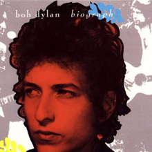

Toggle navigation
Bob Dylan Lyrics
Downloads
All Songs
1960s
Bob Dylan
The Freewheelin' Bob Dylan
The Times They Are A-Changin'
Another Side of Bob Dylan
Bringing It All Back Home
Highway 61 Revisited
Blonde on Blonde
Bob Dylan's Greatest Hits
John Wesley Harding
Nashville Skyline
1970s
Self Portrait
New Morning
Bob Dylan's Greatest Hits, Volume II
Pat Garrett & Billy the Kid
Dylan
Planet Waves
Before the Flood
Blood on the Tracks
The Basement Tapes
Desire
Hard Rain
Street-Legal
Bob Dylan at Budokan
Slow Train Coming
1980s
Saved
Shot of Love
Infidels
Real Live
Empire Burlesque
Biograph
Knocked Out Loaded
Dylan & the Dead
1990s
2000s
2010s
Biograph

Released: November 7, 1985
Length: 214:50
Producer: Jeff Rosen
Label: Columbia
By Bob Dylan
Side 1
Lay Lady Lay
(appeared on
Nashville Skyline
)
Baby, Let Me Follow You Down
(appeared on
Bob Dylan
) (Traditional, arranged by
Gary Davis
,
Eric von Schmidt
, and
Dave Van Ronk
)
If Not for You
(appeared on
New Morning
)
I'll Be Your Baby Tonight
(appeared on
John Wesley Harding
)
I'll Keep It with Mine
Side 2
The Times They Are A-Changin'
(appeared on
The Times They Area A-Changin'
)
Blowin' in the Wind
(appeared on
The Freewheelin' Bob Dylan
)
Masters of War
(appeared on
The Freewheelin' Bob Dylan
)
The Lonesome Death of Hattie Carroll
(appeared on
The Times They Area A-Changin'
)
Percy's Song
Side 3
Mixed-Up Confusion
Tombstone Blues
(appeared on
Highway 61 Revisited
)
Groom's Still Waiting at the Altar
(appeared on
Shot of Love
)
Most Likely You Go Your Way (And I'll Go Mine)
(appeared on
Before the Flood
) (recorded live on February 14, 1974 (late show) in Los Angeles)
Like a Rolling Stone
(appeared on
Highway 61 Revisited
)
Jet Pilot
Side 4
Lay Down Your Weary Tune
Subterranean Homesick Blues
(appeared on
Bringing It All Back Home
)
I Don't Believe You (She Acts Like We Never Have Met)
Visions of Johanna
Every Grain of Sand
(appeared on
Shot of Love
)
Side 5
Quinn the Eskimo (The Mighty Quinn)
Mr. Tambourine Man
(appeared on
Bringing It All Back Home
)
Dear Landlord
(appeared on
John Wesley Harding
)
It Ain't Me, Babe
(appeared on
Another Side of Bob Dylan
)
You Angel You
(appeared on
Planet Waves
)
Million Dollar Bash
(appeared on
The Basement Tapes
)
Side 6
To Ramona
(appeared on
Another Side of Bob Dylan
)
You're a Big Girl Now
Abandoned Love
Tangled Up in Blue
(appeared on
Blood on the Tracks
)
It's All Over Now, Baby Blue
(recorded live on May 17, 1966 in a
Manchester, England
concert, mistakenly known as the
Royal Albert Hall concert
)
Side 7
Can You Please Crawl Out Your Window?
Positively 4th Street
Isis
(original authors: Bob Dylan and
Jacques Levy
) (recorded live on December 4, 1975 at the
Montreal Forum
in
Montreal, Canada
as part of the
Rolling Thunder Revue
)
Caribbean Wind
Up to Me
Side 8
Baby, I'm in the Mood for You
I Wanna Be Your Lover
I Want You
(appeared on
Blonde on Blonde
)
Heart of Mine
(recorded live on November 10, 1981 in
New Orleans, Louisiana
)
On a Night Like This
(appeared on
Planet Waves
)
Just Like a Woman
(appeared on
Blonde on Blonde
)
Side 9
Romance in Durango
(original authors: Bob Dylan and
Jacques Levy
) (recorded live on December 4, 1975 at the
Montreal Forum
in
Montreal, Canada
as part of the
Rolling Thunder Revue
)
Señor (Tales of Yankee Power)
(appeared on
Street-Legal
)
Gotta Serve Somebody
(appeared on
Slow Train Coming
)
I Believe in You
(appeared on
Slow Train Coming
)
Time Passes Slowly
(appeared on
New Morning
)
Side 10
I Shall Be Released
(appeared on
Bob Dylan's Greatest Hits, Volume II
)
Knockin' on Heaven's Door
(appeared on
Pat Garrett & Billy the Kid
)
All Along the Watchtower
(appeared on
Before the Flood
) (recorded live on February 14, 1974 (early show) in Los Angeles)
Solid Rock
(appeared on
Saved
)
Forever Young